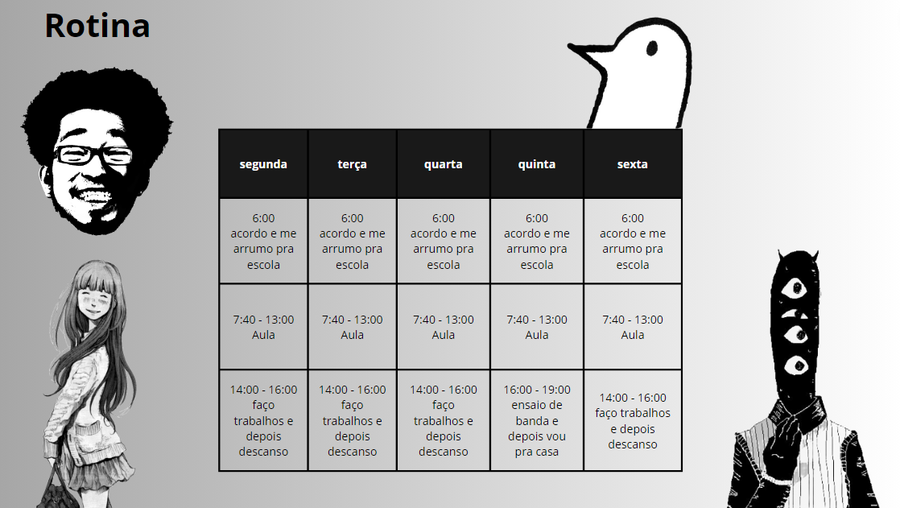
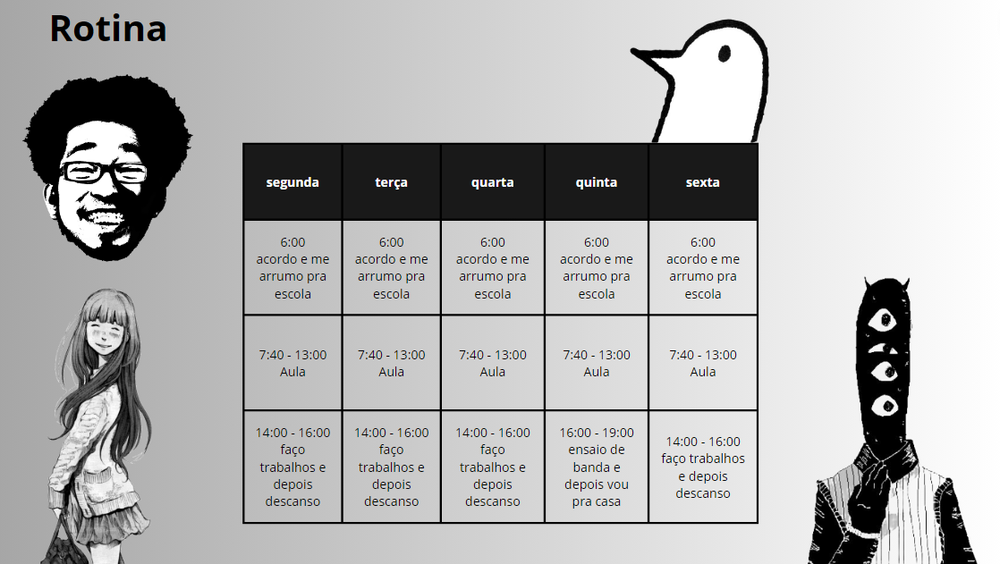

Olá, meu nome é Pedro Henrique, nasci em Florianópolis SC, tenho 17 anos e já estudei em várias escolas: Expressão, Santa terezinha, Dinâmica, Cruz e souza e atualmente Sesi Senai.
Escolhi o Sesi Senai por indicação dos meus pais e por achar que é uma boa escola, com o ensino e método de aprendizagem diferente das outras, pois prepara da melhor forma para o mercado de trabalho e vestibular. Estou no Terceiro ano do ensino médio fazendo o curso técnico do senai, tenho certeza que este ano promete muito tempo de aprendizado e conteúdo de qualidade para minha futura carreira de programador.
Gosto muito de ouvir musica e entre os meus favoritos tem: Alex G, The smiths, Sematary, Csh, TV girl e muitos outros. Gosto muito de Star Wars, alguns filmes/Series de super herois como Invencivel e the boys.
 
